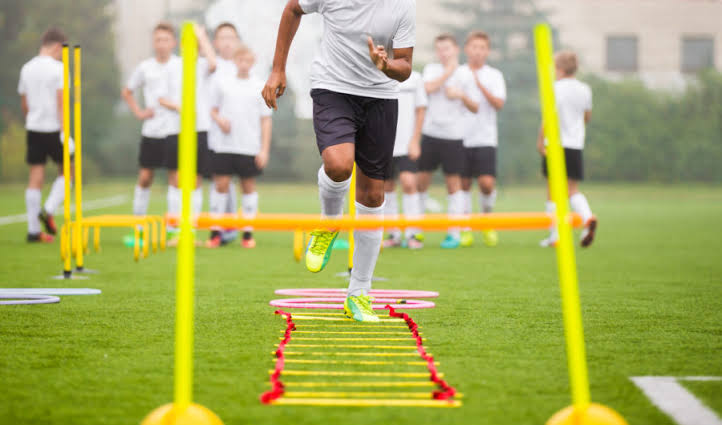
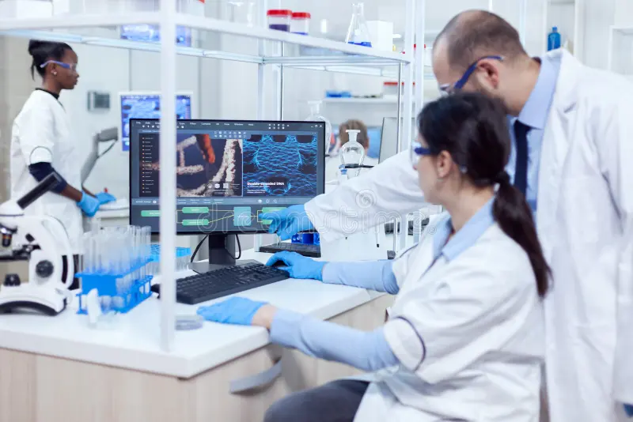
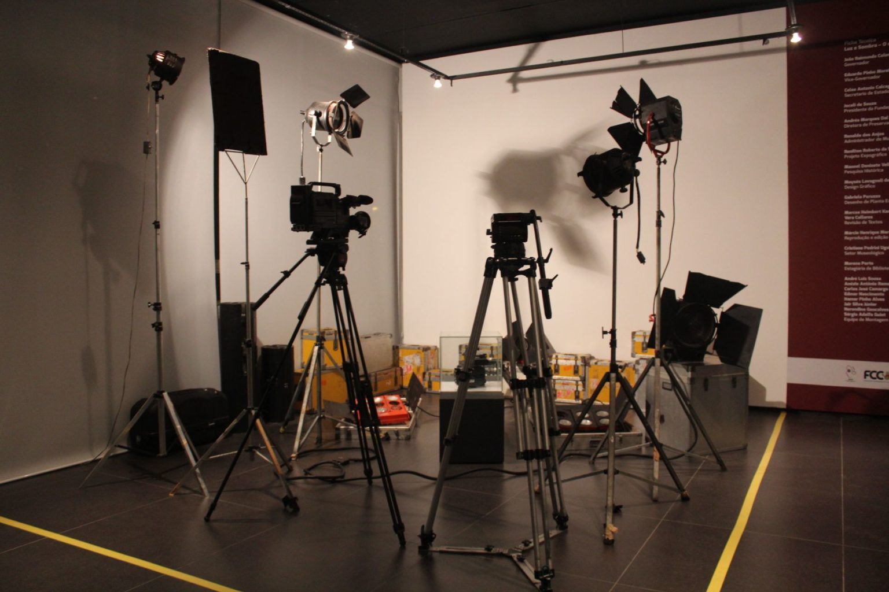
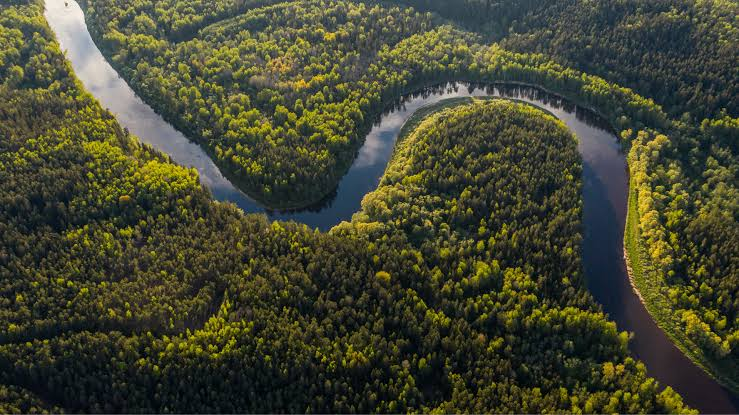

Notícias em Destaque
Acompanhe a cobertura completa das principais competições nacionais e internacionais. Fique por dentro da preparação dos atletas, análises táticas e tudo o que envolve o universo dos esportes de alta performance e da vida saudável.
Grande Final Se Aproxima
Os times finalistas intensificam os treinos táticos nesta semana. A expectativa é de público recorde nos estádios e uma disputa acirrada pelo título nacional.
Preparação intensa das equipes antes da decisão.
Destaques do Calendário Esportivo
Confira o panorama das principais modalidades e o que vem movimentando as arenas pelo mundo:
- Futebol: reta final do campeonato com disputas diretas pelo topo da tabela.
- Basquete: playoffs começam com confrontos decisivos e grande presença de público.
- Vôlei: seleção brasileira inicia fase de amistosos focada nos torneios internacionais.
- Atletismo: novos recordes regionais são quebrados nas provas de corrida de rua.
Diversas modalidades movimentam o cenário esportivo nesta temporada.
Em Foco
Veja os momentos mais marcantes dos treinos, maratonas e bastidores da vida saudável de nossos atletas.




Notícias mais lidas
- Campeonato chega à grande final com público recorde
- Nova rotina de treinos revoluciona desempenho de atletas
- Governo anuncia novos incentivos ao esporte amador
- Empresa lança tênis inteligente com sensores de pisada
- Cientistas fazem descoberta sobre recuperação muscular no sono
Categorias do Portal
- Tecnologia
- Inteligência Artificial
- Programação
- Hardware
- Esportes
- Futebol
- Basquete
- Vôlei
Brasil se prepara para novos desafios no esporte
As equipes brasileiras estão intensificando os treinamentos para as próximas competições internacionais. Atletas de diferentes modalidades buscam melhorar seus resultados e conquistar novos títulos para o país.
- Futebol: clubes ajustam táticas para a pré-temporada.
- Vôlei: novos talentos ganham espaço nas categorias de base.
- Atletismo: rotina de treinos focada em superação de marcas pessoais.
- Ciclismo: provas de longa distância atraem atletas amadores e profissionais.
Confira a dedicação e bastidores do esporte.
Desempenho das notícias
Confira a métrica de acesso às principais matérias publicadas no portal nesta semana:
| Notícia | Categoria | Autor | Visualizações |
|---|---|---|---|
| Campeonato chega à grande final | Esportes | Carlos Silva | 45.210 |
| Recuperação no musculo do sono | Saúde | Dra. Ana Costa | 32.450 |
| Tênis inteligente com sensores | Tecnologia | Lucas Mendes | 28.190 |
| Incentivos ao esporte amador | Governo | Mariana Rocha | 19.800 |
| Nova rotina de treinos intensos | Esportes | Pedro Alves | 15.430 |
| Total de visualizações | 141.080 | ||
Como publicar uma notícia
Siga o passo a passo abaixo para submeter sua matéria à nossa equipe editorial:
- Escrever a notícia
- Revisar o conteúdo
- Adicionar imagens
- Escolher a categoria
- Publicar
Termos Jornalísticos
- Título
- É a frase principal que resume o tema da notícia e atrai a atenção do leitor.
- Lead
- É o primeiro parágrafo da notícia, responsável por responder às perguntas essenciais: o quê, quem, quando, onde, como e por quê.
- Fonte
- É a origem das informações transmitidas na matéria, como testemunhas, especialistas, documentos ou relatórios oficiais.
Saúde e bem-estar em primeiro lugar
Hábitos Essenciais para o Atleta Amador
- Manter uma alimentação rica em nutrientes e bem planejada.
- Praticar atividades físicas orientadas por profissionais.
- Garantir de 7 a 8 horas de sono restaurador por noite.
- Fazer exames de rotina para acompanhar o condicionamento.
Recuperação e Qualidade de Vida
- Hidratação constante antes, durante e após os exercícios.
- Respeitar os dias de descanso para evitar lesões musculares.
- Reservar momentos de relaxamento para diminuir o estresse.
Dicas práticas de exercícios e hábitos para uma vida saudável.